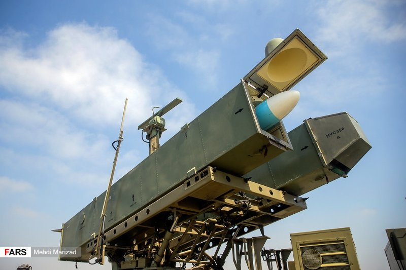

The Photos Say What the Briefings Didn't New images circulating this week show extensive damage to U.S. military installations hit during the exchange with Iran, structural wreckage, scorched equipment, buildings reduced to frames (The New Republic). The same set of photos, reviewed separately, shows the damage was widespread across multiple sites rather than confined to one lucky hit (BBC). That distinction matters. A single damaged hangar is an incident. Damage spread across several U.S. assets in the region is a pattern the Pentagon had not previously laid out in public detail.
That gap between what happened and what Americans were told is what turned this into a story about trust, not just munitions.
A Soldier Says the Quiet Part Out Loud One U.S. service member, reacting to the images, described the reality in blunt terms rather than the sanitized language typically used in official briefings.
We're getting punched in the face.
U.S. soldier, reacting to photos of strike damageThat phrase traveled fast, precisely because it's not how the Pentagon talks (CBS News). Military spokespeople tend to favor words like "engagement" and "resilience." A soldier calling it a punch in the face is a data point of its own, evidence that the distance between the official framing and the experience on the ground had grown wide enough for someone in uniform to say so on camera.
The Images the Public Hadn't Seen The photos themselves, described as never-before-seen, show the scale of damage to U.S. bases in a way that previous statements from defense officials did not convey (CBS News). Whoever released them, and to whom, remains part of the story still unfolding. But the effect is already clear: the public record on this conflict just got measurably more honest, whether or not that was the intention.
That kind of near-simultaneous coverage doesn't happen by accident. Somebody decided it was time these images got out.
The photos are out. Now someone has to decide what to say about them, and someone else has to decide what to do about who let them out.
The Pentagon Will Have to Answer for the Gap, Not the Damage The next 14 days belong to press briefings, not battlefields. Reporters who've now seen the same images the public saw will ask defense officials directly why the scale of the damage wasn't disclosed months ago, and the department's spokespeople will almost certainly reach for the same vocabulary that made a soldier reach for a punch-in-the-face metaphor instead. Expect a version of "operational security" as the explanation for the delay. That answer will not satisfy reporters who can now count the number of hit sites for themselves, and it will not satisfy members of the House and Senate Armed Services Committees, who will have a strong incentive to request a classified briefing before this fades from the news cycle. Whoever chairs those hearings gets to decide whether this becomes a real accountability moment or a closed-door briefing that quietly ends the story.
That decision won't be made by the Pentagon. It'll be made by whoever leaked the photos in the first place.
The Leak Investigation Will Become Its Own Story Four outlets running the same never-before-seen images within a day of each other is not an accident, and the Pentagon's inspector general or the relevant combatant command will almost certainly open some kind of inquiry into who released them and why. The most likely outcome is not that the leaker gets found quickly. It's that the investigation itself becomes the next news cycle, because whoever provided these images had motive, and motive is a story reporters will chase harder than the photos themselves. A whistleblower angle helps the Pentagon lose control of the narrative twice. A rival-agency or congressional-staffer angle helps it lose control differently, by turning this into a fight about who gets to decide what Americans see.
Iran Will Use the Photos Before Washington Finishes Explaining Them Tehran's state media has every incentive to amplify these images as proof of a successful strike campaign, and it will almost certainly do so within days, reframing American caution as American concealment. That puts the Pentagon in the position of correcting the record twice, once for its own public and once for an adversary's propaganda operation, using the same set of photographs. The side that moves first on the interpretation, not the damage itself, wins the next round of this story.
The room the leak opened has three doors in it, and one of them opens toward a Congress that actually does its job.
A Second Leaker Could Come Forward With What the Photos Don't Show The first release proved something important: whoever had access to damage assessments decided the public deserved to see them, and decided it without asking the Pentagon's permission. That's a precedent, not a one-time event. Once one person with clearance concludes that release beats concealment, the calculation gets easier for the next person, especially if the investigation into the first leak starts looking more like a hunt for a scapegoat than a real inquiry. The adjacent possible here isn't more photos. It's context the images alone can't carry, repair timelines, cost estimates, casualty figures that never made it into a press release. A second source with access to that material now has a working example of what happens when you go around the building instead of through it. The Pentagon's own silence created the first leaker's opening. The Pentagon's handling of the leak investigation will decide whether it creates a second one.
That second door only matters if Congress is still standing in the room when it opens.
A Classified Briefing Could Turn Into a Public One The Probabilities section already laid out the choice in front of the Armed Services Committees, closed-door briefing or real accountability moment. What's newly reachable is a third option that didn't exist before the photos leaked: a member of Congress who sat through the classified version deciding the unclassified photos already in every outlet's hands make the classification itself look like the problem. That's a specific and available move, not a hypothetical one, because the images are already public. A senator can't leak a classified briefing, but a senator can point at photos CBS and the BBC already ran and ask why the same damage described in a closed room can't be described in an open one. If that happens, it converts the leak from a security failure into a test case for what "classified" is actually protecting, the mission or the messaging.
Tehran's Propaganda Push Could Misfire Into a Domestic Rally The Probabilities section flagged Iran's incentive to use the photos as proof of a successful campaign. The door that opens next is what happens if that push is heavy-handed enough to read, to an American audience, as gloating over dead or wounded U.S. service members rather than damaged buildings. That's the one version of this story that could shift the domestic argument away from "why didn't the Pentagon tell us" and toward something closer to unity, the same way an adversary's overreach has hardened American opinion before. It's a narrow door. It only opens if Tehran overplays the hand it's already showing signs of wanting to play.
Every one of those threads is still open. Which door gets walked through first depends on who moves next, and nobody in this story has moved last yet.
Somebody has already decided what these photos mean, and they decided it before the photos existed.
"The Damage Was Minimal, and the Photos Are Old" — Pentagon Messaging, Aimed at the Same Public That Just Saw the Photos The instinct to minimize is not new, but the specific shape it will take here is predictable enough to name in advance. Expect a defense official, likely a spokesperson rather than anyone with their name on a promotion board, to suggest the images are being read out of context, that repairs are already complete, that the damage looked worse in a photograph than it was in reality. This version of events answers a real fear. Nobody wants to believe the country absorbed a harder hit than it was told, and a wounded institution's easiest move is to offer the public permission to keep believing the earlier story. The people who benefit are specific and named by rank, not by title: the officials who briefed Congress and reporters in the weeks after the strikes using softer language than the photos now support. If the damage was minimal, nobody has to explain the gap between the briefings and the wreckage. The Pentagon does not need this claim to be believed forever. It needs it to be believed for the two weeks in which congressional attention either sharpens or moves on, and that window is already running.
That lie has a partner, made from the opposite direction and for a different paycheck.
"This Proves America Lost the War" — Tehran's State Media, Aimed at an Audience That Was Never Going to See a Correction The claim is bigger than the photos support, and it's built the same way the Pentagon's minimization is: by using a true fact, real damage occurred, to carry a false conclusion, that the damage was decisive rather than costly. Iranian state outlets have every reason to skip past "several U.S. sites sustained real damage" and land on total American defeat, because the audience for that framing isn't reporters who can count hit sites. It's a domestic audience that needs a return on whatever the strikes cost, and a regional audience Tehran wants to convince that hitting American assets carries no real price. The people who benefit are the officials who ordered the strikes and now need proof of their value that exceeds what any damage assessment would actually show. The historical parallel is not subtle. Governments across a century of wars have mistaken photographs of wreckage for photographs of victory, and the gap between the two has usually been paid for later, by someone else, in a different currency.
We're getting punched in the face.
U.S. soldier, reacting to photos of strike damage — a line neither government wants quoted back to its own version of eventsBoth lies need the same photographs. Neither one needs the truth sitting between them.
![NTK]()